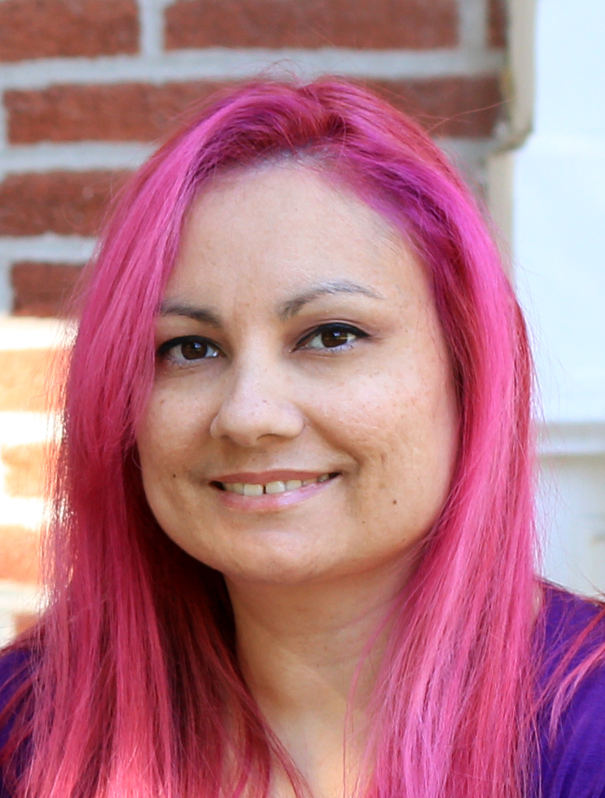

Maria Baldridge
About Me
Graduate Student in Learning Technologies and Design

The path that I have taken to get here today has been quite an experience. I was born in the
Philippines, but moved to the United States when I was a toddler. Since then, I’ve lived in Washington,
southern Missouri, Louisiana, and have now settled in Columbia, MO with my family.
I have always
loved learning and creativity. These interests made the field of education seem like the perfect choice
for me. I earned my bachelor's degree in elementary education in 2008. I worked as a preschool
teacher for many years after graduation. I left the workforce in 2017 to become a stay-at-home parent
when our daughter was born. It was during this time that I decided I wanted to move out of the
classroom when I was ready to jump back into the workforce. I chose this master’s program because
it is a good blend of my interests. My future goals are to create educational software to help people
learn.
Career
I have spent most of my career working in the classroom in early childhood education. After I graduated with my bachelor’s degree, I accepted a job in a preschool classroom at the LSU Child Care Center. This was my first full time experience in a classroom, and as a caregiver. I learned a lot from the children and families that I worked for and was able to take those lessons and experiences with me when we moved. My next major job change was when I joined the Head Start Program. It was an experience that was both similar, and vastly different to my previous experiences. It was in that program that I was able to develop my support skills through helping the children and families with what they needed. It also gave me a lot of experience working with a diverse group of children with differing abilities. Working in the classroom has been rewarding and has changed how I see things about the world and learning. I’m now ready to move out of the classroom, but still very much want to contribute to education and learning. The skills that I’m learning through this program will help me to accomplish both goals.
Education
I graduated with my bachelor’s degree in elementary education in 2008. Now, 15 years later, I’m in the learning technologies and design program. I think a lot of the basics have stayed the same, but the level of technology has certainly grown, and with more variety. Back then, SMART boards were the standard, tablets were just starting to show up in classrooms, and online courses were the exception. Most people in college were in-seat students. Seeing these changes is refreshing and makes for an exciting time. I can’t wait to see what comes next.
Course Program Experiences
My journey through this program has been an adventure. I’m only halfway through this program but I’ve already learned so many new things. I’ve learned new programs, like Tableau and Captivate, and have learned how to create many different educational objects, like an e-learning module and an ASK system. I completed my bachelor’s degree as a fully in-seat student, so online courses were something to get used to. I found that online learning was very intuitive and have loved a lot of my courses.
Career Goals
My career goals are learning as much as I can about learning theory and the various programs used to create online learning. My specific interests currently are developing educational software and games. I would love to be part of a team that creates programs that help people learn, and hopefully in a fun way.
| Year | Activity |
|---|---|
| 2008 | Graduated with Bachelor of Science in Education |
| 2009-2011 | Preschool Teacher at LSU Child Care Center |
| 2014-2015 | Substitute Teacher for Columbia Public Schools |
| 2015-2017 | Preschool Teacher for the Head Start Program |
| 2022-present | Graduate Student in Learning Technologies and Design |
“To love the journey is to accept no such end. I have found, through painful experience, that the most important step a person can take is always the next one.”—Oathbringer by Brandon Sanderson